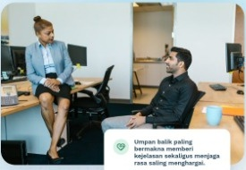

Membangun kepercayaan
Komunikasi terbuka membuat proses evaluasi terasa lebih aman, jujur, dan saling menghargai.
Komunikasi yang terbuka mengubah evaluasi menjadi percakapan untuk berkembang—bukan sekadar penilaian atas apa yang sudah terjadi.

Umpan balik yang disampaikan dengan jelas dan terbuka membantu seseorang memahami apa yang perlu dipertahankan dan apa yang perlu dikembangkan.
Komunikasi terbuka membuat proses evaluasi terasa lebih aman, jujur, dan saling menghargai.
Pesan yang spesifik membantu penerima memahami standar, tujuan, dan prioritas kerja.
Umpan balik menjadi dasar untuk memperbaiki kinerja dan mengembangkan potensi.
Sampaikan umpan balik dengan fokus pada perilaku, dampak, dan langkah perbaikan.
Tujuan utamanya bukan menyalahkan, tetapi membantu seseorang tumbuh dan bekerja lebih baik.
Pastikan percakapan berlangsung dalam suasana yang tenang dan tidak mempermalukan penerima.
Bahas perilaku atau situasi nyata agar pesan lebih mudah dipahami.
Dengarkan sudut pandang penerima dan sepakati langkah perbaikan bersama.
Pilihan kata dan cara menyampaikan pesan dapat menentukan apakah umpan balik menjadi peluang belajar atau justru menimbulkan sikap defensif.
Spesifik, objektif, menghargai, fokus pada perilaku, dan menawarkan solusi.
Menghakimi, terlalu umum, menyerang pribadi, dan tidak memberi arah perbaikan.
Tulis situasi nyata. Gunakan bahasa yang spesifik, objektif, dan berorientasi pada perkembangan.
Komunikasi yang baik membantu tim belajar, berkembang, dan bekerja lebih efektif.